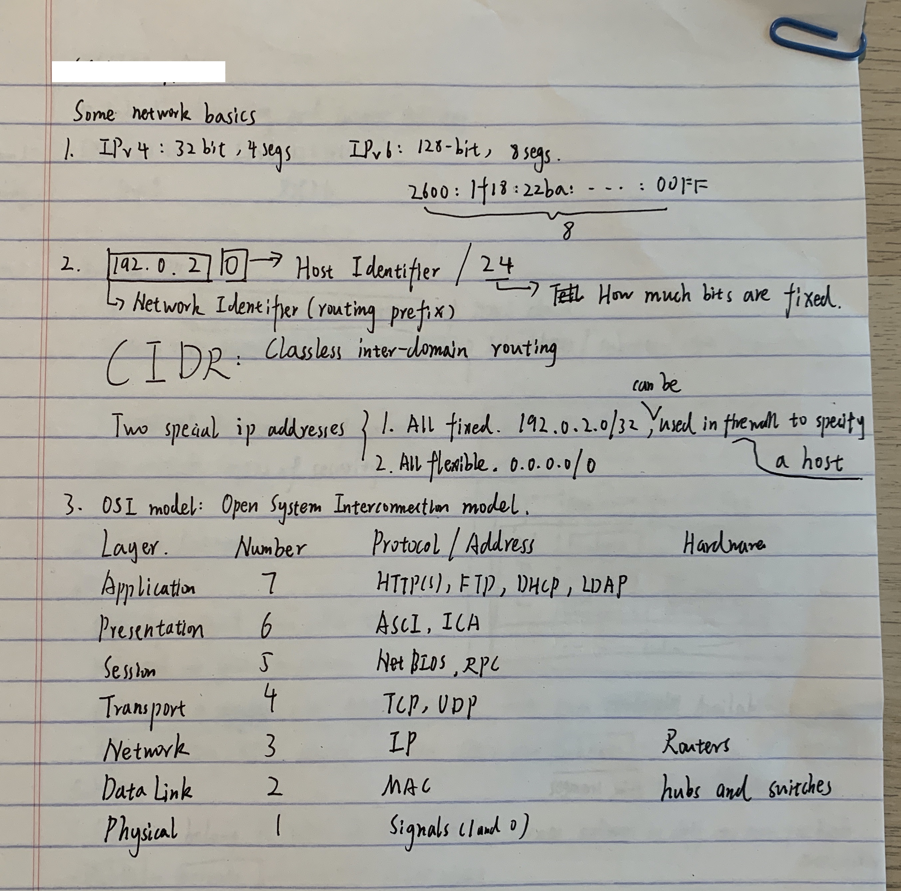
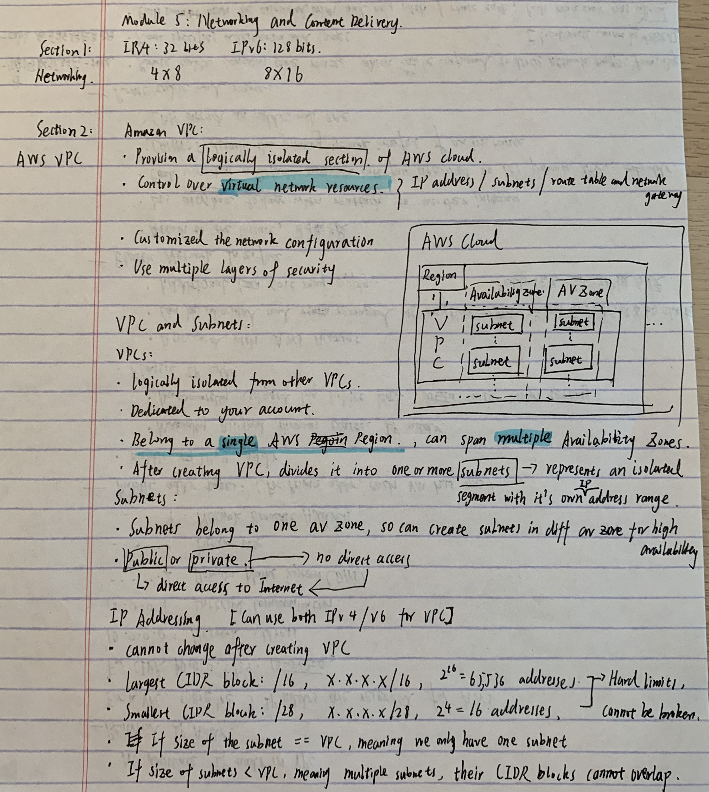

AWS学习笔记: Networking and Content Delivery
欢迎来到我的AWS学习笔记系列。
本文着重记述关于AWS网络和内容分发的知识点。如若转载，请先与作者联系。
本文图片来自于网络
AWS Networking and Content Delivering
Sec I: Networking Basics

Sec II: Amazon VPC


Sec III: VPC Networking
Outlines
Internet gateway: Connects your VPC to the internet
NAT gateway: Enables instances in a private subnet to connect to the internet
VPC endpoint: Connects your VPC to supported AWS services
VPC peering: Connects your VPC to other VPCs
VPC sharing: Allows multiple AWS accounts to create their application resources into shared, centrally-managed Amazon VPCs
AWS Site-to-Site VPN: Connects your VPC to remote networks
AWS Direct Connect: Connects your VPC to a remote network by using a dedicated network connection
AWS Transit Gateway: A hub-and-spoke connection alternative to VPC peering
Internet Gateway(public subnet公网连接)
- Scalable, redundant and highly available.
- Allow communication between instances in VPC and the internet.
- Two purposes:
- Provide a target for the VPC route tables for internet-routable traffic.
- Perform network address translation(NAT) for instances within VPC.
- Subnet and gateway
- If a subnet is associated with a route table which
- has a gateway -> public subnet;
- doesn’t have a gateway -> private subnet.
- To make subset public,
- Attach an internet gateway to the VPC(not directly to the subnet).
- Add a route to the route table to send non-local traffic through the gateway to the internet
- In your subnet route table, you can specify a route for the internet gateway to all destinations not explicitly known to the route table (0.0.0.0/0 for IPv4 or ::/0 for IPv6)

Network Address Gateway(NAT) (private subnet借public subnet单向访问公网)
- Reside in public subnet, work for private subnet.
- Enable private subnets to access the Internet, but prevent the Internet from initializing connection with private subnets.
- Have to assign an elastic IP address to NAT gateway.
- Alternative: NAT Instance, but NAT gateway is recommended because:
- NAT gateway is a managed NAT service that provides better availability, higher bandwidth, and less administrative effort.
- For common use cases, AWS recommends that you use a NAT gateway instead of a NAT instance.

- VPC sharing enables customers to share subnets with other AWS accounts in the same organization in AWS Organizations.
- Application resources: such as Amazon EC2 instances, Amazon Relational Database Service (Amazon RDS) databases, Amazon Redshift clusters, and AWS Lambda functions.
- The participants can view, create, modify, and delete their application resources in the subnets that are shared with them.
- Centrally controlled VPC structure, routing, IP address allocation.

- A VPC peering connection is a networking connection between two VPCs that enables you to route traffic between them privately.
- When you set up the peering connection, you create rules in your route table to allow the VPCs to communicate with each other through the peering resource.
- Restrictions:
- IP address ranges cannot overlap.
- Transitive peering is not supported. A<->B, A<->C, cannot infer B<->C.
- You can only have one peering resource between the same two VPCs.
AWS Site-to-Site VPN(VPC到外部网络点对点VPN连接)
- From private subnet to your own(remote) network.
- By default, instances that you launch into a VPC cannot communicate with a remote network. To connect your VPC to your remote network (that is, create a virtual private network or VPN connection), you:
- Create a new virtual gateway device (called a virtual private network (VPN) gateway) and attach it to your VPC.
- Define the configuration of the VPN device or the customer gateway. The customer gateway is not a device but an AWS resource that provides information to AWS about your VPN device.
- Create a custom route table to point corporate data center-bound traffic to the VPN gateway. You also must update security group rules. (You will learn about security groups in the next section.)
- Establish an AWS Site-to-Site VPN (Site-to-Site VPN) connection to link the two systems together.
- Configure routing to pass traffic through the connection.

AWS Direct Connect(VPC与外部数据中心建立private高性能连接)
- Private connection from your VPC to your data center. The key difference between VPN:
- It focuses on increasing the performance of the connection.
- Replace AWS Site-to-Site VPN with AWS Direct Connect.
- Use open standard 802.1q virtual local area networks (VLANs).
- reduce your network costs, increase bandwidth throughput, and provide a more consistent network experience than internet-based connections.

VPC Endpoints(VPC与AWS内部services建立private互联)
- Still private connection, connect your VPC to supported AWS services and VPC endpoint services that are powered by AWS PrivateLink.
- Connection to these services does not require an internet gateway, NAT device, VPN connection, or AWS Direct Connect connection.
- Instances in your VPC do not require public IP addresses to communicate with resources in the service. Traffic between your VPC and the other service does not leave the Amazon network.

AWS Transit Gateway(将上述各类connection用一个hub集成)
- A transit gateway acts as a hub that controls how traffic is routed among all the connected networks, which act like spokes.
- You can configure your VPCs in several ways, and take advantage of numerous connectivity options and gateways, but managing point-to-point connectivity across many VPCs without the ability to centrally manage the connectivity policies can be operationally costly and difficult.
- To solve this problem, you can use AWS Transit Gateway to simplify your networking model. With AWS Transit Gateway, you only need to create and manage a single connection from the central gateway into each VPC, on-premises data center, or remote office across your network.

Sec IV: VPC Security
In this section, you learn about two Amazon VPC firewall options that you can use to secure your VPC: security groups and network access control lists (network ACLs).
Security Groups(instance级别安全措施)
- A security group acts as a virtual firewall for your instance, and it controls inbound and outbound traffic.
- Security groups act at the instance level, not the subnet level. Therefore, each instance in a subnet in your VPC can be assigned to a different set of security groups.

- By default, no inbound traffic allowed; all outbound traffic allowed.
- Stateful.
- if you send a request from your instance, the response traffic for that request is allowed to flow in regardless of inbound security group rules.
- Responses to allowed inbound traffic are allowed to flow out, regardless of outbound rules.
- Custom Security Rules
- You can specify allow rules, but not deny rules.
- All rules are evaluated before the decision to allow traffic.
network access control list (network ACL) (subnet/VPC级别安全措施)
- Acts as a firewall for controlling traffic in and out of one or more subnets.
- Each subnet in your VPC must be associated with a network ACL. If you don’t explicitly associate a subnet with a network ACL, the subnet is automatically associated with the default network ACL.
- You can associate a network ACL with multiple subnets; however, a subnet can be associated with only one network ACL at a time.
- Your VPC automatically comes with a modifiable default network ACL.
- Difference between ACL and security groups:
- By default, it allows all inbound and outbound IPv4 traffic and, if applicable, IPv6 traffic.
- Each rule can either allow or deny traffic.
- Network ACLs are stateless, which means that no information about a request is maintained after a request is processed.
- Custom ACL
- By default, each custom network ACL denies all inbound and outbound traffic until you add rules.
- A network ACL contains a numbered list of rules that are evaluated in order, starting with the lowest numbered rule. The highest number that you can use for a rule is 32,766.
- AWS recommends to create rules in increments.
Comparison between security groups and network ACL.
| Security Groups | Network ACLs | |
|---|---|---|
| Scope | Instance level. | Subnet level. |
| Default | All inbound traffic denied; all outbound traffic allowed. | Allows all inbound and outbound IPv4 traffic. If applicable, allows IPv6 traffic. |
| Supported rules | allow rules only |
allow and deny rules |
| State | Stateful | Stateless |
| Customize | User can only specify allow rules but deny rules. | By default, custom ACL denies all inbound and outbound traffic until adding rules. User can both add allow or deny rules. |
| Order of rules | All rules are evaluated. | Rules are evaluated in number order(increment). |
Sec V: Route 53
Amazon Route 53 is a highly available and scalable cloud Domain Name System (DNS) web service.
- Translating names (like www.example.com) into the numeric IP addresses (like 192.0.2.1).
- Is fully compliant with IPv4 and IPv6
- Connects user requests to infrastructure running in AWS and also outside of AWS
- Is used to check the health of your resources
- Features traffic flow
- Enables you to register domain names
- support routings
- Simple routing – Use in single-server environments
- Weighted round robin routing – Assign weights to resource record sets to specify the frequency
- Latency routing – Help improve your global applications
- Geolocation routing – Route traffic based on location of your users
- Geoproximity routing – Route traffic based on location of your resources
- Failover routing – Fail over to a backup site if your primary site becomes unreachable
- Multivalue answer routing – Respond to DNS queries with up to eight healthy records selected at random
- Multi-Region deployment
- Latency-based routing to the Region
- Load balancing routing to the Availability Zone
- Route Failover
- Configuring backup and failover scenarios for your own applications
- Enabling highly available multi-region architectures on AWS
- Creating health checks

Sec VI: CloudFront
The purpose of networking is to share information between connected resources. So far in this module, you learned about VPC networking with Amazon VPC. You learned about the different options for connecting your VPC to the internet, to remote networks, to other VPCs, and to AWS services.
Content delivery occurs over networks, too—for example, when you stream a movie from your favorite streaming service. In this final section, you learn about Amazon CloudFront, which is a content delivery network (CDN) service.
Content Delivery Network(CDN)
- Globally distributed system of caching servers.
- The CDN delivers a local copy of the requested content from a cache edge or Point of Presence that provides the fastest delivery to the requester.
- Accelerates delivery of dynamic content
- Improves application performance and scaling
Amazon CloudFront(Amazon提供的CDN服务)
- Features:
- Fast, global, and secure CDN service
- Global network of edge locations and Regional edge caches
- Self-service model
- Pay-as-you-go pricing
- Global infrastructure
- Edge locations: Network of data centers that CloudFront uses to serve popular content quickly to customers.
- Regional edge locations: CloudFront location that caches content that is not popular enough to stay at an edge location. It is located between the origin server and the global edge location.